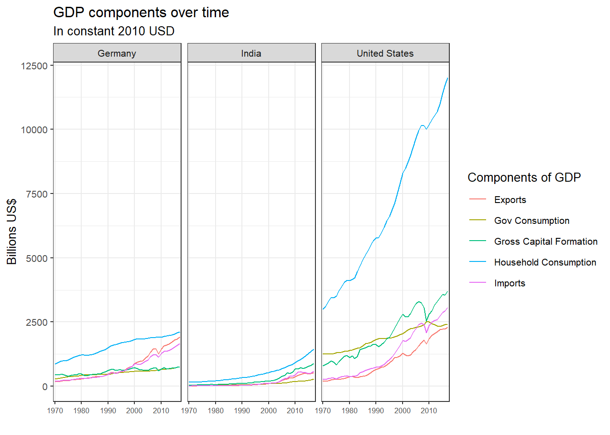

## # A tibble: 176,880 x 5
## CountryID Country IndicatorName year Expenditure
## <dbl> <chr> <chr> <chr> <dbl>
## 1 4 Afghanistan Total Consumption 1970 5.56
## 2 4 Afghanistan Total Consumption 1971 5.33
## 3 4 Afghanistan Total Consumption 1972 5.20
## 4 4 Afghanistan Total Consumption 1973 5.75
## 5 4 Afghanistan Total Consumption 1974 6.15
## 6 4 Afghanistan Total Consumption 1975 6.32
## 7 4 Afghanistan Total Consumption 1976 6.37
## 8 4 Afghanistan Total Consumption 1977 6.90
## 9 4 Afghanistan Total Consumption 1978 7.09
## 10 4 Afghanistan Total Consumption 1979 6.92
## # ... with 176,870 more rows# Let us compare GDP components for these 3 countries
country_list <- c("United States","India", "Germany")
US_India_Germany_GDP <- clean_GDP_Data%>%
group_by(year)%>%
select(Country, IndicatorName, year, Expenditure)%>%
filter(Country %in% c("United States","India","Germany"))%>%
filter(IndicatorName %in% c("Gross Capital Formation", "Exports","Gov Consumption", "Household Consumption", "Imports" ))
ggplot(US_India_Germany_GDP, aes(year, Expenditure, colour = IndicatorName, group = IndicatorName)) + geom_line() + labs (title = "GDP components over time", subtitle = "In constant 2010 USD", y = "Billions US$", x = "") + theme_bw(base_size = 10) + scale_x_discrete(breaks = c(1970, 1980, 1990, 2000, 2010)) + facet_wrap(~Country) + guides(color=guide_legend("Components of GDP")) + theme(axis.text.x = element_text(size = 6))
It is evident that consumption is much higher in the United States compared to Germany and India. Their GDP is quite higher overall!